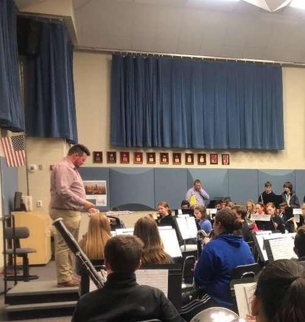
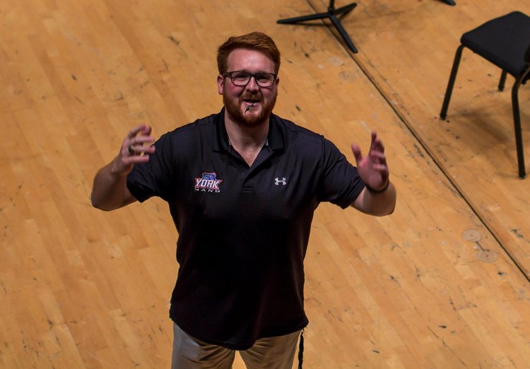
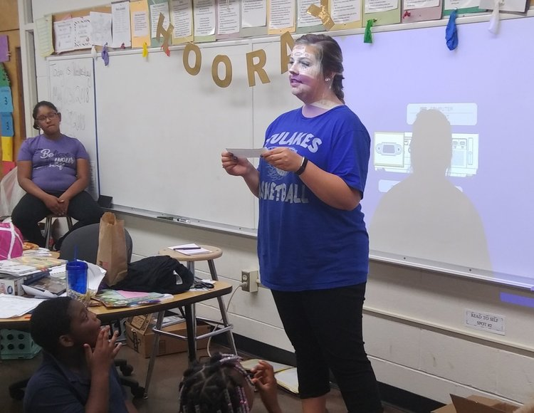

SWDAA For Education

Matt HildebrandSWDAA For Education Fall 2018
Matt teaches 6th-12th grade band at Bartlesville High School and is the primary teacher at Central Middle School for teaching 6th-8th grade band classes. Matt is an alumnus of the Lambda chapter of Kappa Kappa Psi at the University of Arkansas. Matt stated that he will put the award to use by purchasing Trumpet Ensemble music for a Trumpet Ensemble he is organizing to start year-round through Bartlesville High School. We asked Matt why he teaches. He said, “It would be easy to say that I teach solely to make good music, and to teach students how to be great on their instruments. But in world like the one we live in today, it becomes apparent that we need a whole new style of teachers in order to effectively reach our youth. That’s why focus first and foremost on teaching my students to become better students, individuals, and citizens of the world we live in. In return, making music is simply a by product of this teaching.” “There are many different aspects that I love about my job. While making music with my students and colleagues, to always improving my musicianship on many different instruments, and endless hours of paperwork and planning makes the job exciting and eventful. But one of the most rewarding moments of the job is the feeling of accomplishment from your students after months of hard work, whether it be from a successful marching band season, a stellar concert, or a student performing their first scale; every second of this job is worth the work we put into our students. It also helps that I work with an amazing group of directors whom are very supportive, easy to crack jokes with, and are all around great guys.” Matt embodies the characteristics of a brother and shares that with his students on a daily basis. A peer said of Matt, “Matt's dedication to his students shows in the way he talks about his experiences with them. He always has something positive to say and goes above and beyond by never cutting corners when it comes to setting an example for his students.”
Colin PetersSWDAA For Education Fall 2018
Colin currently works at York Junior High teaching music as an Assistant Band Director! He is an alumnus of the Tau chapter of Tau Beta Sigma at the University of Houston and served as a SWD Secretary/Treasurer! A peer said of Colin, “Colin always puts his students and their music education first, and is constantly promoting not only his band's success, but also the success of other bands in his district and city! He is an advocate for education and for his students. You can tell he loves his job and he loves his students." “This is evident throughout his Facebook posts and his actions, such as running sectionals to help students become better musicians. He also takes time out of his weekends to help with band service, such as working as a judge at the Region IX contest on a Saturday. He can be seen staying at the school late to ensure he is prepared for lessons and rehearsals the next day. He also can be seen taking care of himself by going on walks with his dog or going to gym, so that he can feel refreshed and ready to go the next day at his job!” What an incredible sister and educator! Thank you for teaching, Colin!